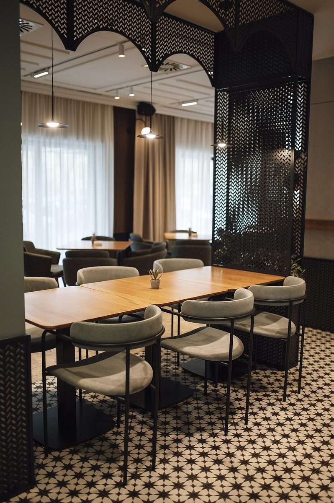
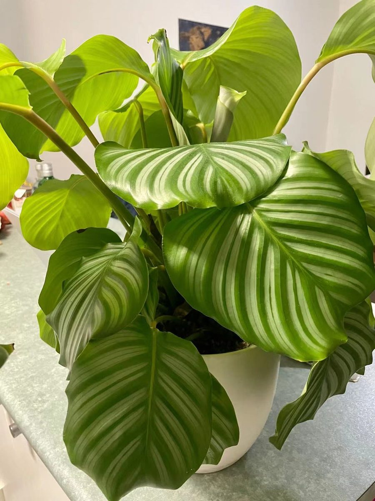

手順 1 / 04
店のこと
お店について確認できているのは、所在地とInstagramのアカウントだけです。
確認できていること
- 店名は「MIMOMI TERRACE」、業種はカフェ
- 所在地は千葉県習志野市実籾4丁目14-9(〒275-0002)
- 電話番号はなし。連絡はInstagramから
- 営業時間・定休日・メニュー・価格・ご予約・駐車場は準備中

想像してみる
「TERRACE」という言葉から
由来は分かりません。制作側は、テラスという言葉から、屋内と屋外のあいだの、風や光を感じる場所を連想しました。窓辺で一杯の飲み物を置いて、ひと息つく。そんな時間を思い浮かべています(実際のお店の姿ではありません)。

